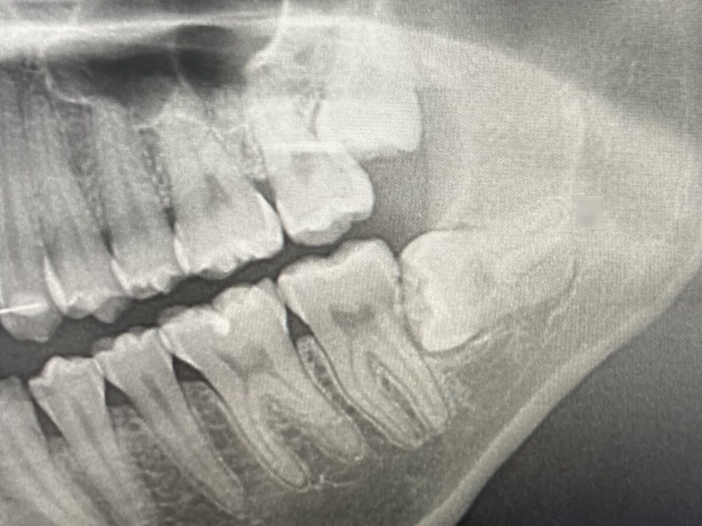
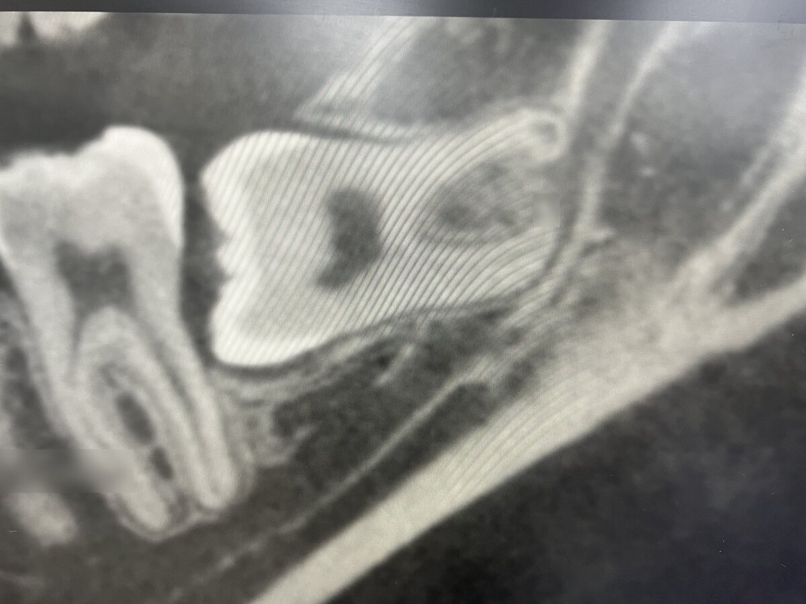
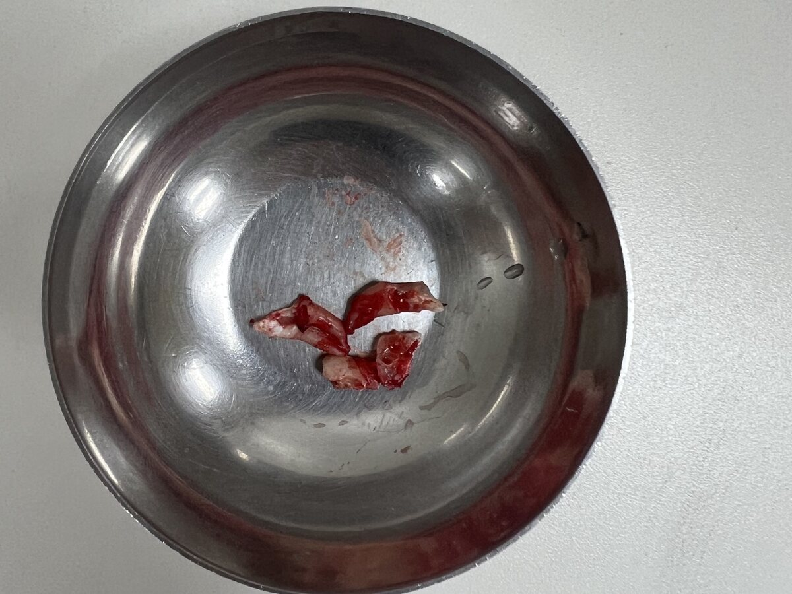
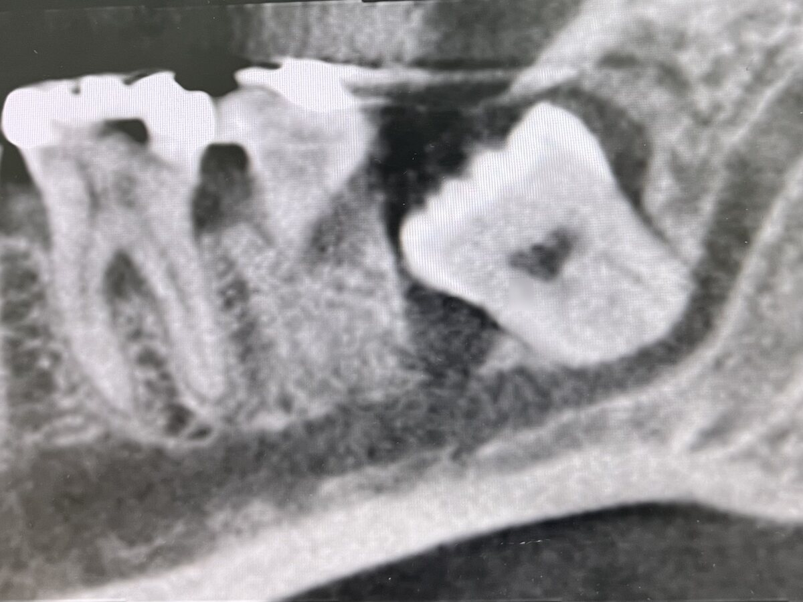
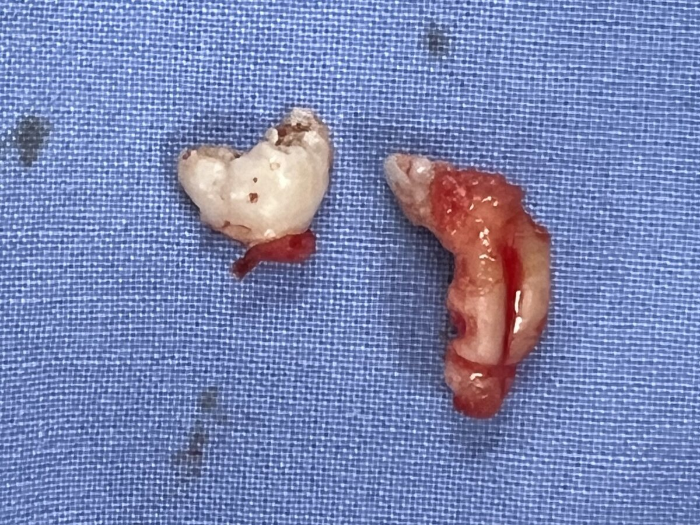
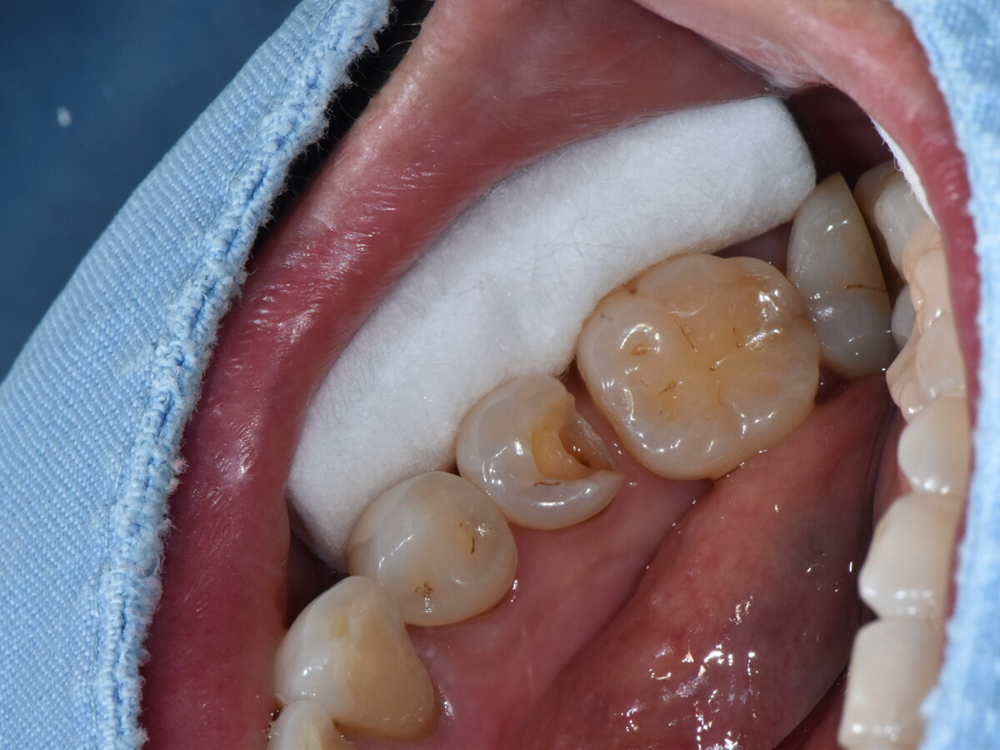
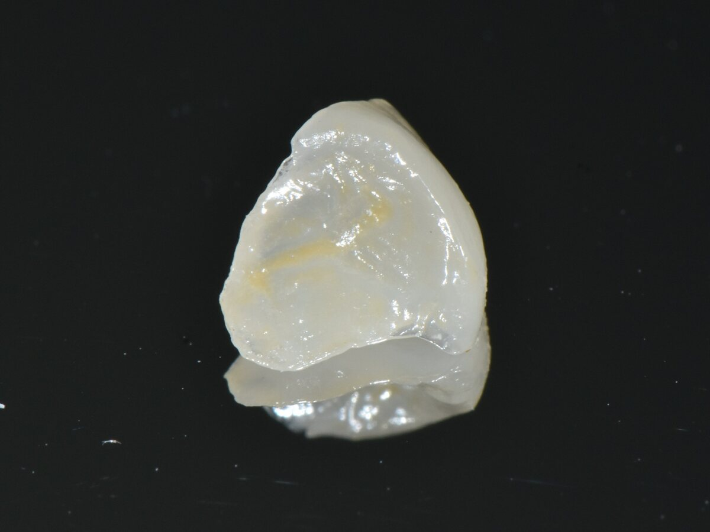
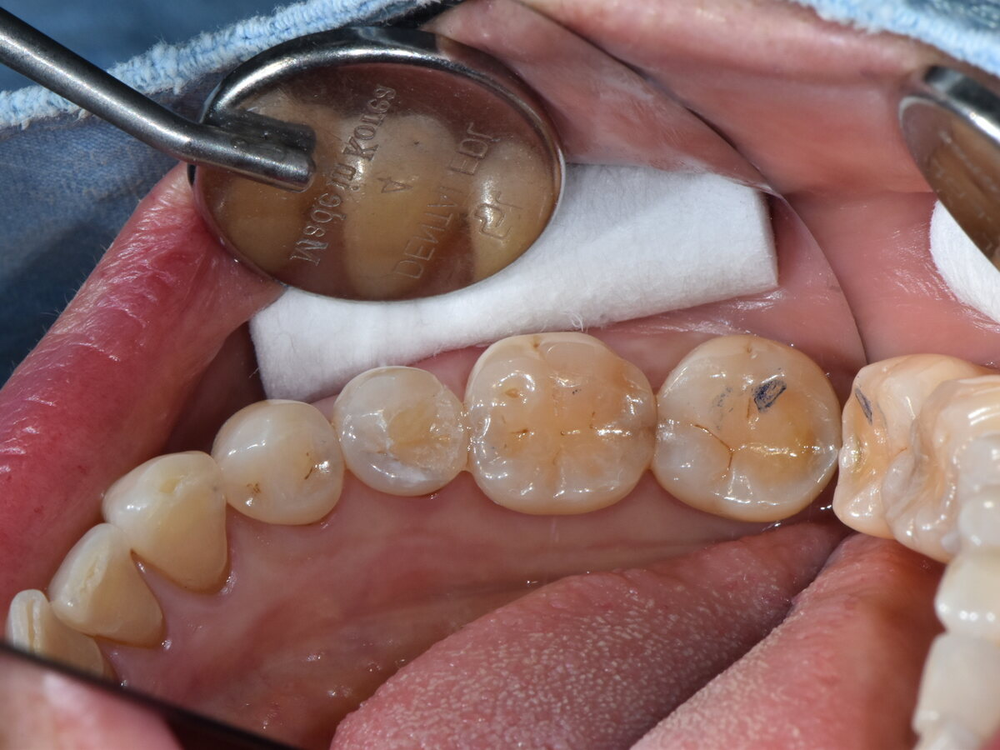
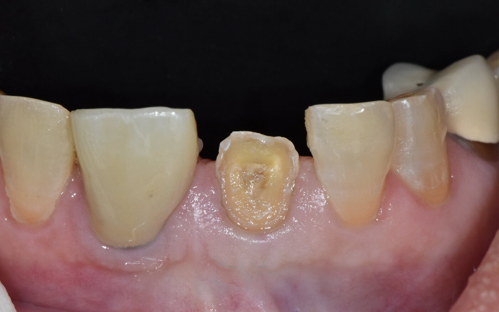
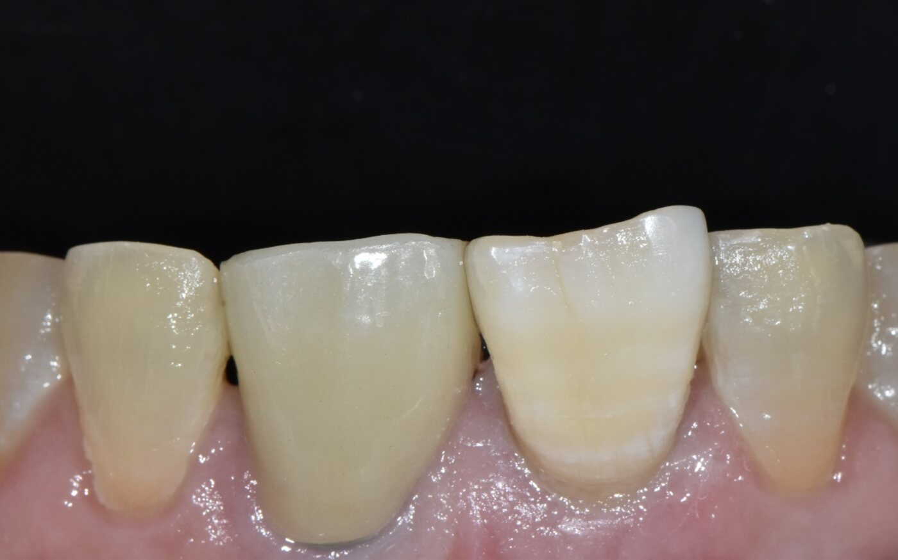

신경관에 닿은 수평 매복 사랑니



Courtesy of Dr. Lee Won Woo
- 문제
- 아래 사랑니가 옆으로 누운 채 뼈에 묻혀 신경관에 닿아 있음
- 진단
- CBCT로 신경관과의 거리를 3차원으로 확인
- 치료
- 신경을 피해 치아를 여러 조각으로 나눠 발치
개인 치과에서는 대학병원으로 의뢰하는 경우가 많은 난이도입니다.
Case book
인턴 1년, 레지던트 3년의 수련을 마친 전문의가 진료합니다. 아래 사진은 본원에서 근무한 전문의가 직접 진료한 사진입니다.
치과 전문의란?
치과대학을 마친 뒤 한 분야만 4년 더 수련하고 전문의 자격시험을 통과한 치과의사입니다. 민간 대학병원 치과에서 진료하는 전문의와 같은 자격입니다.
01 · Oral surgery



Courtesy of Dr. Lee Won Woo
개인 치과에서는 대학병원으로 의뢰하는 경우가 많은 난이도입니다.


Courtesy of Dr. Lee Won Woo
02 · Prosthodontics



Courtesy of Dr. Lee Won Woo

Courtesy of Dr. Lee Won Woo
03 · Trauma & caries


Courtesy of Dr. Lee Won Woo
이가 부러지면 조각을 버리지 말고 우유나 생리식염수에 담아 바로 가져오세요. 내 치아 조각이 가장 자연스러운 재료입니다.


Courtesy of Dr. Lee Won Woo


Courtesy of Dr. Lee Won Woo
Why here
임플란트, 틀니, 교정, 전신마취가 필요한 수술. 이 치료는 국군병원이 맞는 곳이라 진단 후 소견서를 써 드립니다.
Book
상담만 받아 보고 결정해도 됩니다
내선 803-7112
평일 09:00–16:00 · 행정반이나 사무실의 군 전화로만 연결됩니다. 전화할 때 말할 것
증례 사진은 본원에서 근무한 전문의가 직접 진료한 사진이며, 환자 동의를 받아 게재합니다. 치료 결과는 개인마다 다를 수 있습니다.